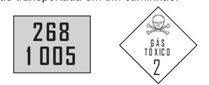

Para serem absorvidos pelas células do intestino humano, os lipídios ingeridos precisam ser primeiramente emulsificados. Nessa etapa da digestão, torna-se necessária a ação dos ácidos biliares, visto que os lipídios apresentam uma natureza apolar e são insolúveis em água.
Esses ácidos atuam no processo de modo a
a)hidrolisar os lipídios.
b)agir como detergentes.
c)tornar os lipídios anfifílicos.
d)promover a secreção de lipases.
e)estimular o trânsito intestinal dos lipídios.
2.
A tecnologia de comunicação da etiqueta RFID (chamada de etiqueta inteligente) é usada há anos para rastrear gado, vagões de trem, bagagem aérea e carros nos pedágios. Um modelo mais barato dessas etiquetas pode funcionar sem baterias e é constituído por três componentes: um microprocessador de silício; uma bobina de metal, feita de cobre ou de alumínio, que é enrolada em um padrão circular; e um encapsulador, que é um material de vidro ou polímero envolvendo o microprocessador e a bobina. Na presença de um campo de radiofrequência gerado pelo leitor, a etiqueta transmite sinais. A distância de leitura é determinada pelo tamanho da bobina e pela potência da onda de rádio emitida pelo leitor. Disponível em: http://eletronicos.hsw.uol.com.br. Acesso em: 27 fev. 2012 (adaptado).
A etiqueta funciona sem pilhas porque o campo
a)elétrico da onda de rádio agita elétrons da bobina.
b)elétrico da onda de rádio cria uma tensão na bobina.
c)magnético da onda de rádio induz corrente na bobina.
d)magnético da onda de rádio aquece os fios da bobina.
e)magnético da onda de rádio diminui a ressonância no interior da bobina.
3.
Corredores ecológicos visam mitigar os efeitos da fragmentação dos ecossistemas promovendo a ligação entre diferentes áreas, com o objetivo de proporcionar o deslocamento de animais, a dispersão de sementes e o aumento da cobertura vegetal. São instituídos com base em informações como estudos sobre o deslocamento de espécies, sua área de vida (área necessária para o suprimento de suas necessidades vitais e reprodutivas) e a distribuição das suas populações. Disponível em: www.mma.gov.br. Acesso em: 30 nov. 2017 (adaptado).
Nessa estratégia, a recuperação da biodiversidade é efetiva porque
a)propicia o fluxo gênico.
b)intensifica o manejo de espécies.
c)amplia o processo de ocupação humana.
d)aumenta o número de indivíduos nas populações.
e)favorece a formação de ilhas de proteção integral.
4.
A identificação de riscos de produtos perigosos para o transporte rodoviário é obrigatória e realizada por meio da sinalização composta por um painel de segurança, de cor alaranjada, e um rótulo de risco. As informações inseridas no painel de segurança e no rótulo de risco, conforme determina a legislação, permitem que se identifique o produto transportado e os perigos a ele associados. A sinalização mostrada identifica uma substância que está sendo transportada em um caminhão.

Os três algarismos da parte superior do painel indicam o “Número de risco”. O número 268 indica tratar-se de um gás (2), tóxico (6) e corrosivo (8). Os quatro dígitos da parte inferior correspondem ao “Número ONU”, que identifica o produto transportado. BRASIL. Resolução n. 420, de 12/02/2004, da Agência Nacional de Transportes Terrestres (ANTT)/Ministério dos Transportes (adaptado). ABNT. NBR 7500: identificação para o transporte terrestre, manuseio, movimentação e armazenamento de produtos. Rio de Janeiro, 2004 (adaptado). Considerando a identificação apresentada no caminhão, o código 1 005 corresponde à substância